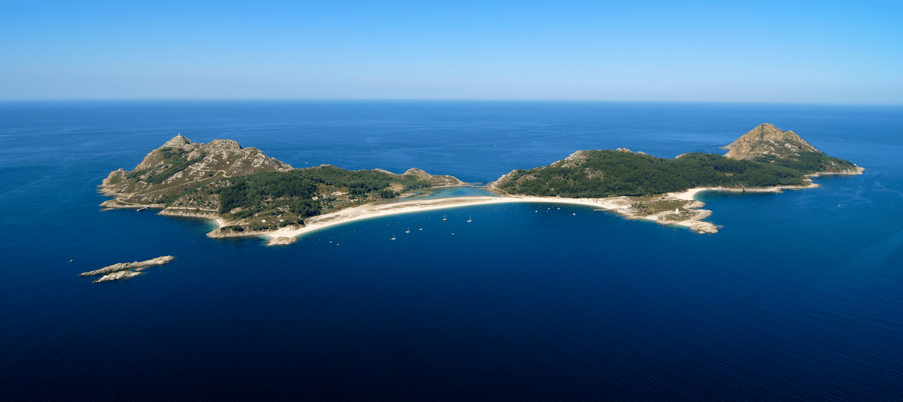

Islas Cíes
Visita las islas de los dioses
Las Islas Cíes son el mayor tesoro de la ría de Vigo: Un increíble Parque Nacional
Marítimo-Terrestre y uno de los lugares más hermosos del país, de ahí que los romanos
les pusieran el nombre de las islas de los dioses.
El archipiélago de Cíes son 3 islas:
- Monte Agudo,
- Faro y
- San Martiño
Las 2 primeras unidas por un largo arenal: la playa de Rodas, la mejor playa del mundo,
según The Guardian.
Cíes forma parte del Parque Nacional Illas Atlánticas: un paraíso de playas paradisíacas
y aguas cristalinas, con un entorno natural que lo convierten en un observatorio de fauna y
flora único.
Una visita a Cíes es ideal tanto para practicar senderismo en familia disfrutar de sus
playas vírgenes y tranquilas.
Para llegar a la Cíes se puede utilizar:
- hacer un viaje en barco día en barco a Cíes
- alquilar un yate en Vigo.
También podrás pasar un fin de semana en Cíes de acampada. Además, es un lugar
excepcional para bucear en la ría de Vigo y, con suerte, podrás nadar rodeado de arroaces
(los delfines autóctonos, de menor tamaño).